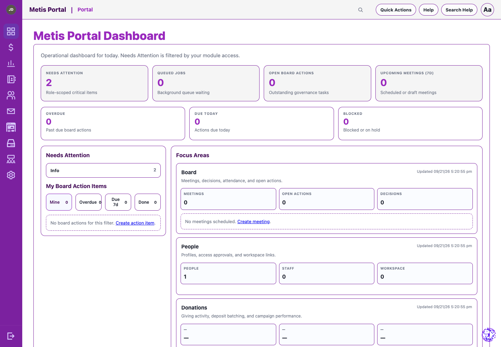
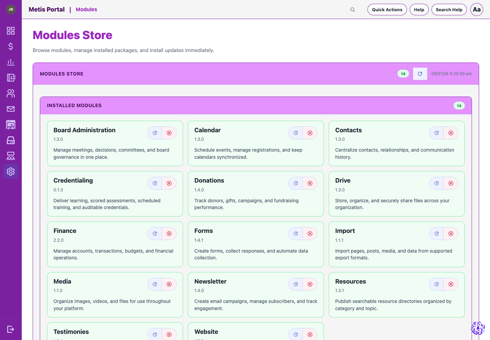
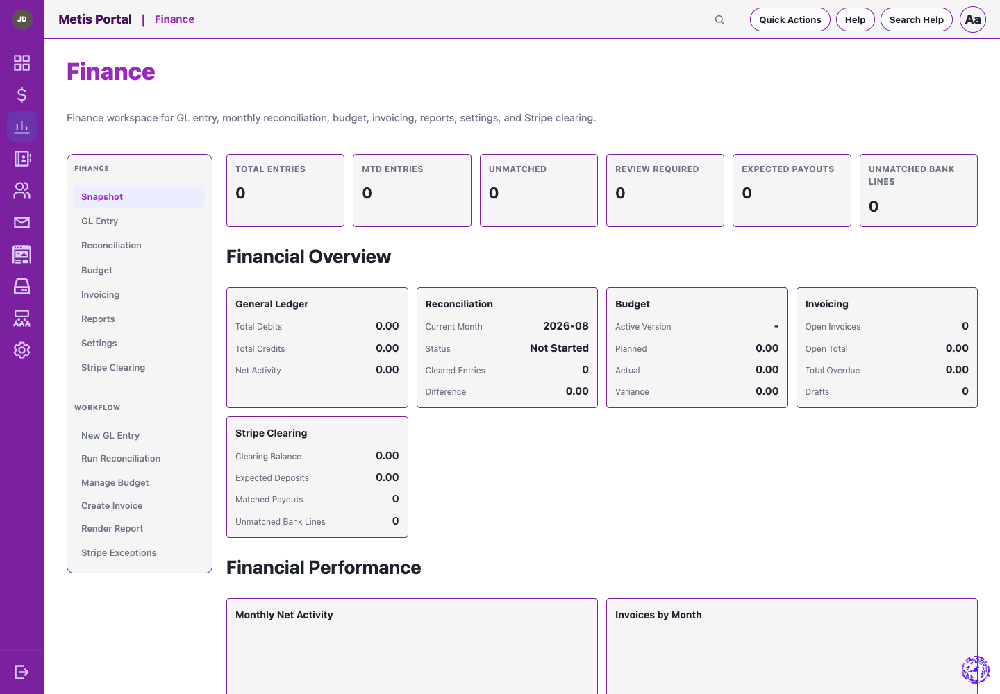
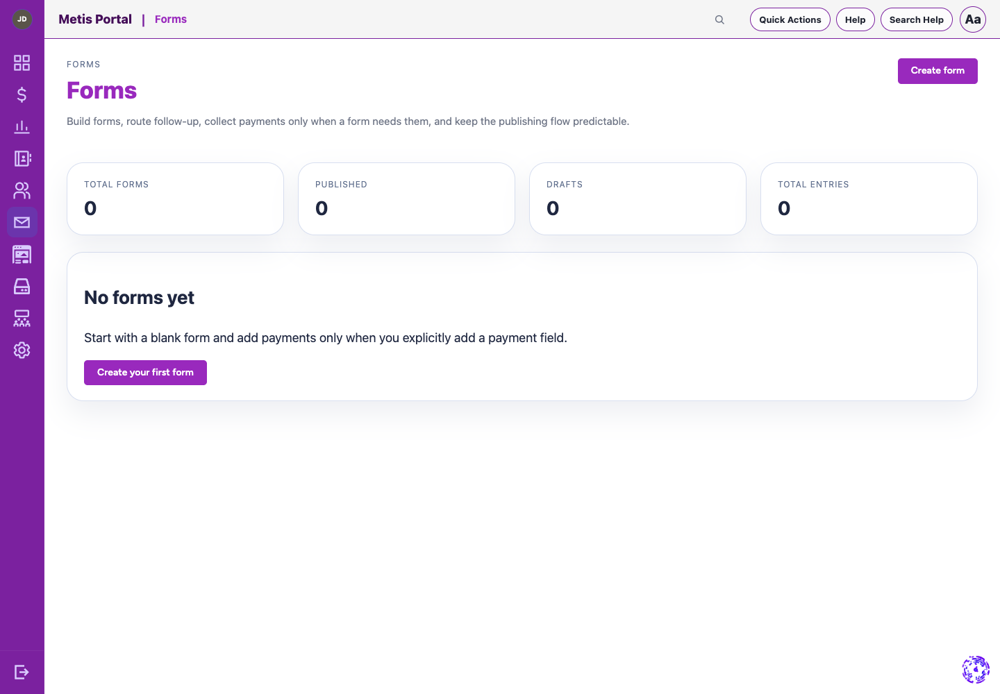
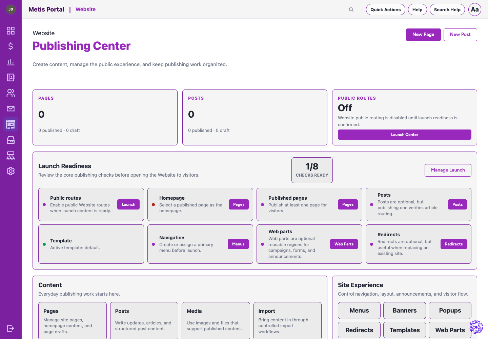

People & access
Centralized identity, roles, profiles, contacts, directories, and permission-aware actions keep the right people in the right places.
Metis brings people, governance, communications, giving, files, finance, content, and secure administration into one adaptable platform—without forcing every organization into the same workflow.
Metis replaces a patchwork of disconnected tools with one coherent foundation, while keeping each team’s workflow appropriately focused.
Centralized identity, roles, profiles, contacts, directories, and permission-aware actions keep the right people in the right places.
Forms, newsletters, media, calendars, giving, websites, and board workflows make outward-facing work easier to manage.
Secure Enclave controls, audit logging, backups, recovery services, integrity checks, and release management support dependable operations.
These snapshots are from a clean Metis development installation with all official modules installed. They show the actual product interface using fictional demonstration content only—never production records.







storage/ and system/config/Explore the capabilities behind the platform, see the official modules, and follow releases from the project repository.
See what Metis can do